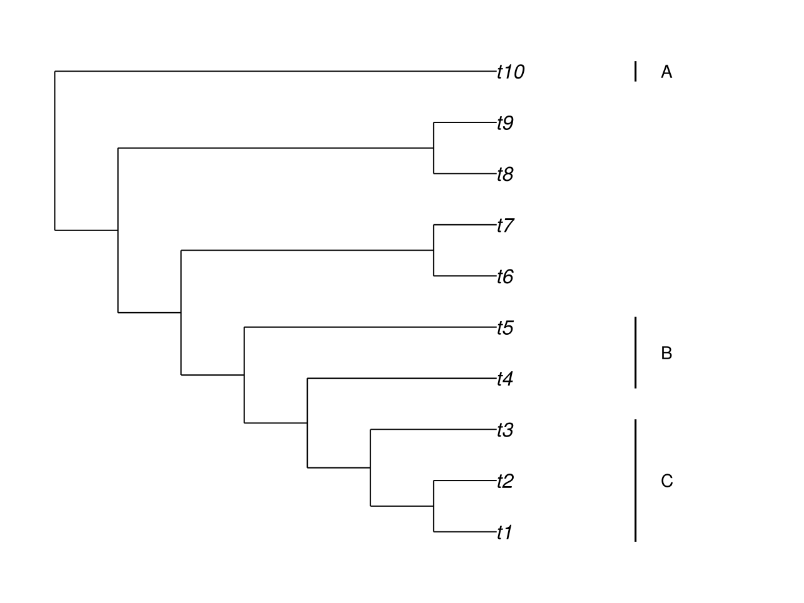

Extending plots
Axis-based extension
plot!(ax, net; ...) renders the network into an existing Makie Axis and returns a PhyloPlot. After the call, ax is a standard Makie axis. Any Makie primitive –- lines!, text!, scatter!, hlines!, vlines!, poly! –- can be added to it directly. No coordinate lookup from a return value is required.
figure = Figure()
ax = Axis(figure[1, 1])
hidedecorations!(ax)
hidespines!(ax)
plot!(ax, net; useedgelength = true, style = :fulltree, showtiplabel = true)
# Add a horizontal reference line at the midpoint of the y-axis
hlines!(ax, [3.0]; color = :grey70, linestyle = :dot)
figureY-axis layout convention
PhyloMakie places taxa at consecutive integer y-positions determined by a cladewise traversal of the network. The traversal visits child edges of each node from right to left (last-in, first-out), so the topmost clade in the Newick string occupies the highest y-positions and the bottommost clade occupies y = 1.
For a network with n taxa and no minor hybrid edges (style = :majortree), taxon y-positions run from 1 to n. When style = :fulltree, each minor hybrid edge claims one additional integer y-position above n, so the full y-range extends to n + (number of minor hybrid edges).
The exact y-position of each taxon depends on the traversal order, which is determined by the network topology and the order of edges stored internally. Use shownodenumber = true on an exploratory plot to confirm which taxon lands at which y-position before composing manual annotations. PhyloNetworks.rotate! reorders child edges and therefore changes the traversal order (see Annotations).
Side clade bars example
The example below adds labeled margin bars to denote clades on a 10-taxon pure-tree network. The tree has 10 taxa at y-positions 1–10. Three clades are annotated:
- A: taxa t1 and t2 at y = 10 and y = 9
- B: taxa t6 and t7 at y = 5 and y = 4
- C: taxa t8–t10 at y = 3, 2, 1
xlim is widened on the right to create margin space for the bars and labels.
tree = PhyloNetworks.readnewick(
"(((((((t1,t2),t3),t4),t5),(t6,t7)),(t8,t9)),t10);",
)
figure = Figure(size = (640, 480))
ax = Axis(figure[1, 1])
hidedecorations!(ax)
hidespines!(ax)
plot!(ax, tree; xlim = (1, 12), showtiplabel = true)
bar_x = 10.2
label_x = 10.6
# Clade A: t1 (y=10) and t2 (y=9)
lines!(ax, [bar_x, bar_x], [9.8, 10.2]; color = :black)
text!(ax, label_x, 10.0; text = "A", align = (:left, :center))
# Clade B: t6 (y=5) and t7 (y=4)
lines!(ax, [bar_x, bar_x], [3.8, 5.2]; color = :black)
text!(ax, label_x, 4.5; text = "B", align = (:left, :center))
# Clade C: t8 (y=3), t9 (y=2), t10 (y=1)
lines!(ax, [bar_x, bar_x], [0.8, 3.2]; color = :black)
text!(ax, label_x, 2.0; text = "C", align = (:left, :center))
figure
Design boundary
node_positions(plot) and edge_positions(plot) are now part of the stable public layout-query surface. When taxon y-positions must be determined programmatically –- for example, to anchor annotations on a named taxon without knowing its position in advance –- render the plot, then call node_positions/edge_positions on the returned handle:
plot_handle = plot!(ax, net; useedgelength = true, style = :fulltree)
node_positions(plot_handle) # number, name, isleaf, x, y --- one row per node
edge_positions(plot_handle) # number, ishybrid, ismajor, gamma, x, y --- one row per edgeBoth functions read the plot's live compute graph rather than recomputing layout, so their values always match what is on screen and stay current after Makie.update!. Unlike the plot's on-screen text toggles, they unconditionally cover every node/edge. Overall plot extent is available separately, the standard Makie way, via Makie.data_limits(plot).
The lower-level computation path that these two functions are themselves built on –- PhyloMakie.resolve_plot_config, PhyloMakie.prepare_plot_network, PhyloMakie.compute_network_geometry, PhyloMakie.compute_layout –- remains reachable for package-development experiments, but it is not the supported entry point for reading coordinates off a plot you have already rendered; use node_positions/ edge_positions for that instead:
config = PhyloMakie.resolve_plot_config(; useedgelength = true, style = :fulltree)
plot_network = PhyloMakie.prepare_plot_network(net)
geometry = PhyloMakie.compute_network_geometry(plot_network, config)
layout = PhyloMakie.compute_layout(plot_network, config, geometry)
# layout.geometry.node_x, layout.geometry.node_y
# layout.annotations.node_dataThe Render verification page uses current graph outputs for docs-internal proof. node_positions/edge_positions are documented alongside the rest of the public attribute surface in Public API.